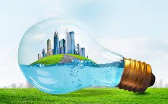
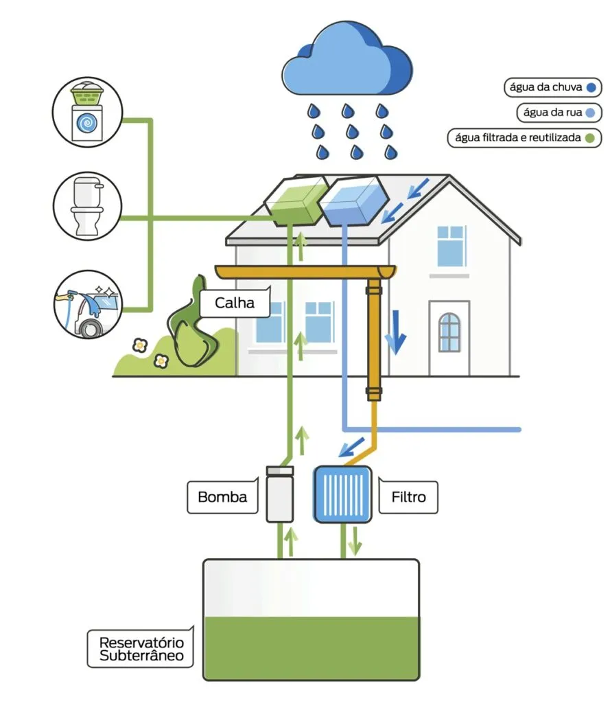
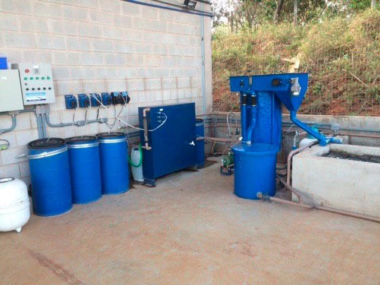
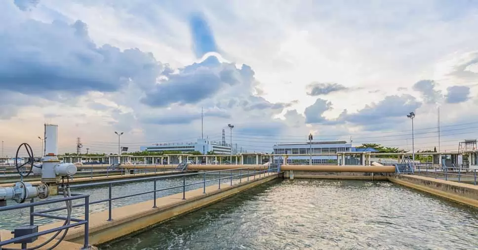
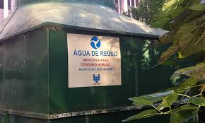

Reutilização de Água
A reutilização de água é essencial para um futuro sustentável. Conheça as diferentes formas de reaproveitamento em diversos ambientes.

Uso Residencial
Em residências, a água pode ser reutilizada de várias formas:
- Captação de água da chuva para irrigação (economia de até 50% no consumo)
- Reúso de água de lavatórios para descargas (reduz em 30% o uso de água potável)
- Tratamento de águas cinzas para jardins (1 família gera ~200L/dia de águas cinzas)
- Sistemas compactos de filtragem para reúso doméstico
- Hidroponia caseira com água recirculante
Dica: Comece com um barril de coleta de água da chuva (custo médio R$ 300)

Uso Comunitário
Em comunidades, o reúso de água pode trazer benefícios coletivos:
- Sistemas comunitários de tratamento de efluentes
- Jardins comunitários com água reaproveitada
- Reservatórios compartilhados para água pluvial
- Educação ambiental sobre conservação hídrica

Uso Comercial
Empresas podem reduzir custos e impactos ambientais:
- Sistemas de reúso em processos industriais
- Tratamento de efluentes para limpeza de áreas
- Captação de água pluvial para resfriamento
- Certificações ambientais com foco em sustentabilidade

Uso Público
Governos e instituições podem implementar:
- Estações de tratamento de esgoto para reúso
- Irrigação de parques e jardins públicos
- Sistemas municipais de captação pluvial
- Políticas públicas de incentivo ao reúso

1
Coleta
Captação de água pluvial e águas cinzas
2
Tratamento
Filtragem e desinfecção conforme padrões
3
Distribuição
Rede dedicada para usos não potáveis
Benefícios da Reutilização de Água
Estatísticas
70% redução no consumo em indústrias
Conservação
Redução do consumo de água potável em até 50%
Economia
Diminuição de custos com água e esgoto
Sustentabilidade
Menor impacto ambiental e preservação dos recursos